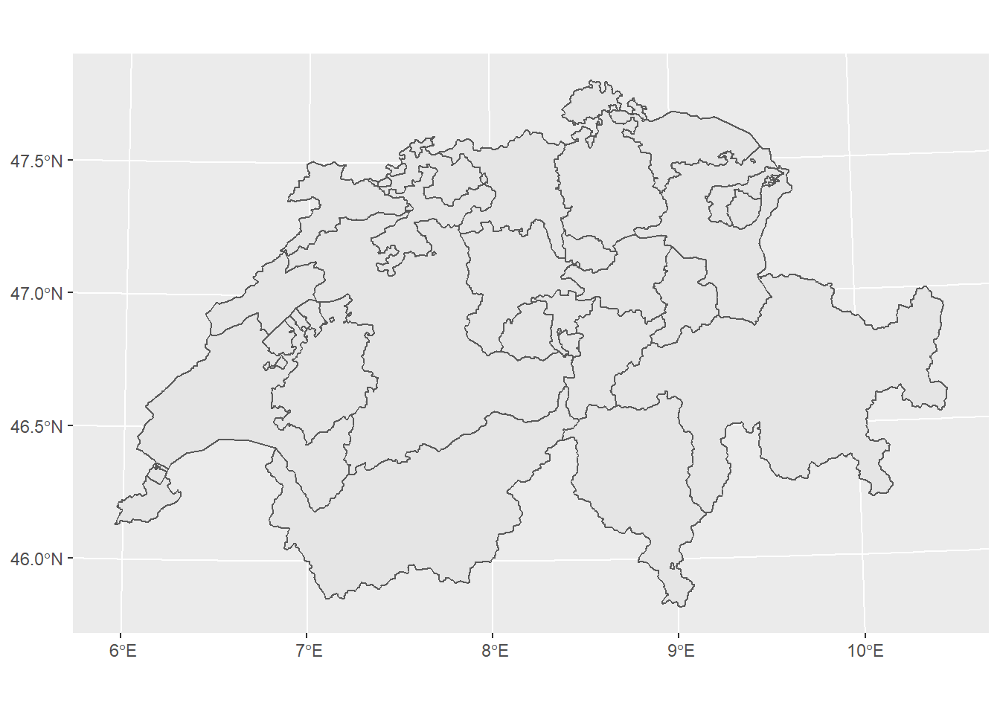
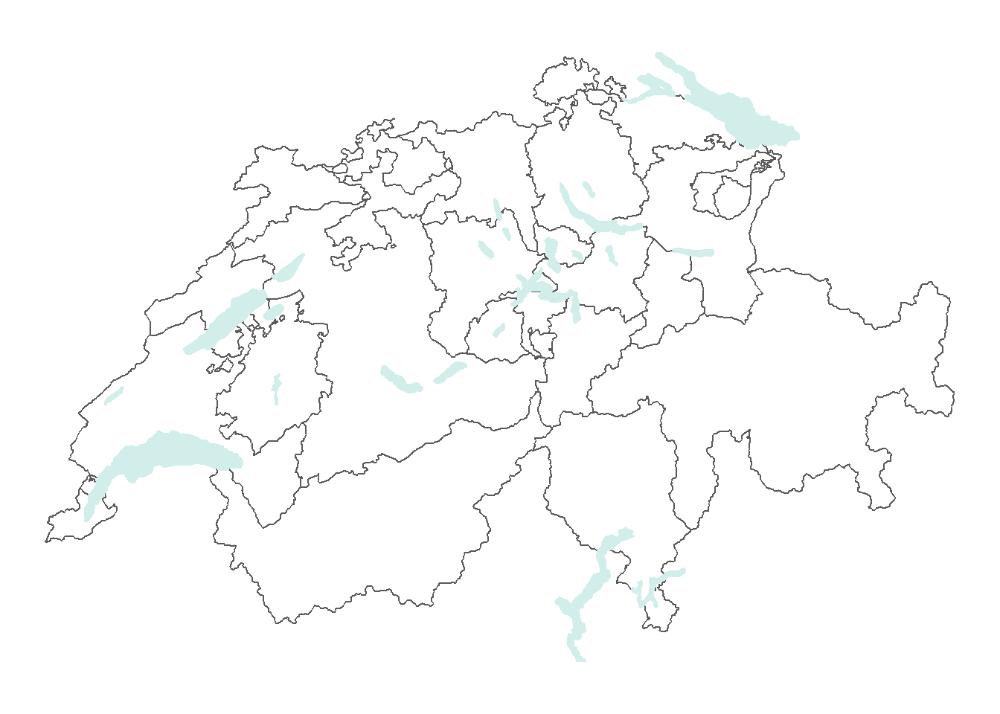
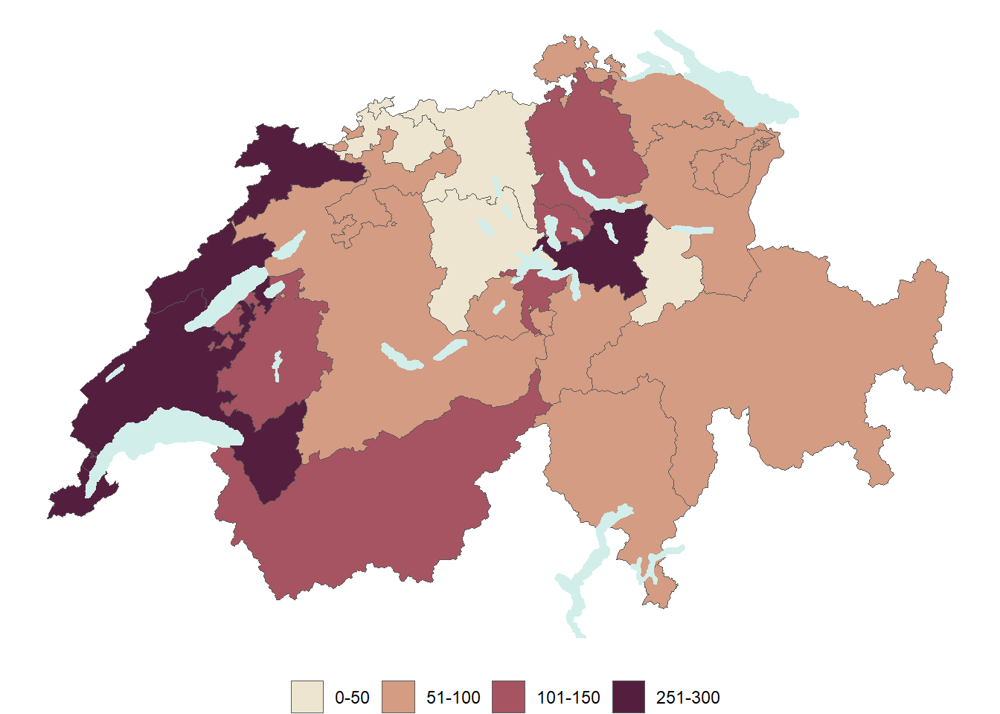
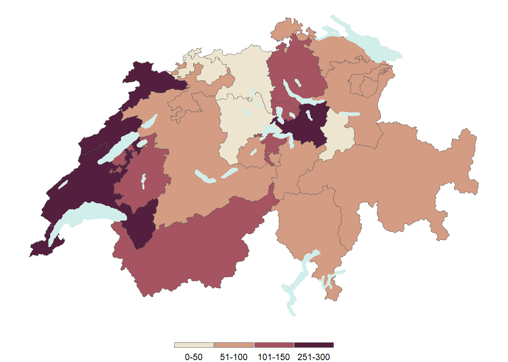
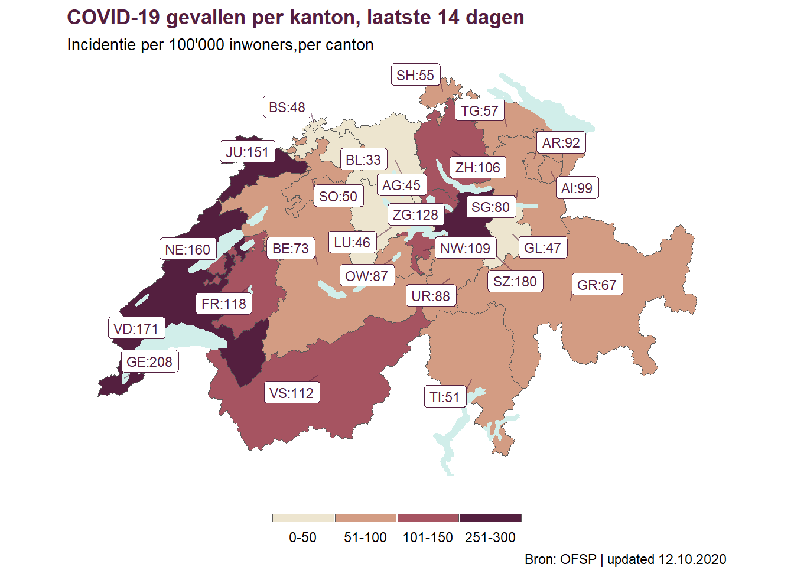

library(tidyverse)
library(sf)
library(rcartocolor)
library(readxl)Kaarten maken
Op Medium verscheen eind 2020 dit duidelijke blog van Giulia Ruggeri Hier de link. Ik wilde weer eens met ggplot2 en sf werken en Giulia’s blog vond ik interessant en heb ik vervolgens bewerkt.
In de afgelopen jaren is het maken van mooie kaarten in R vrij eenvoudig geworden, dankzij het {sf} pakket. In dit artikel gaan we de ruimtelijke verspreiding van de COVID-19 incidentie van de laatste 14 dagen in Zwitserland visualiseren door een thematische kaart te maken, een choropleth kaart zoals dat heet. We maken daarbij gebruik van {sf} en {ggplot2} als onze belangrijkste hulpmiddelen.
{sf}, wat staat voor simple feature (eenvoudige eigenschap), is de ‘go-to’ bibliotheek om om te gaan met ruimtelijke vectoriële gegevens, dat zijn gegevens die geografische geometrieën beschrijven als een reeks van punten, die worden beschreven door hun lengteg- en breedtegraad coördinaten. Hiermee kunnen geografische vormen worden geïmporteerd, gemanipuleerd en geplot en kunnen we gegevens verwerken in een tabel-achtig formaat, net als een data.frame. Wat een opluchting!
In deze kleine oefening gebruiken we {readxl} om het Excel bestand te importeren en binnen te halen van de website van het Zwitsers Federaal Bureau van Publieke Gezondheid.
{rcartocolor} is de R bibliotheek die mooi uitziende kleurschalen bevat, die zijn ontwikkeld voor cartografie. Zoals David Letterman zou zeggen, {tidyverse}‘needs no introduction’. Dit zijn de programma’s die we hier binnenhalen.
Laten we beginnen met het laden van de gegevens, met read_excel(), waarin we de exacte naam van het blad dat we willen laden kunnen opgeven, hoeveel regels we mogen overslaan en hoeveel regels we in totaal willen behouden.
We hebben een rij per kanton en een rij voor de titel, wat betekent dat we slechts 27 rijen hoeven te behouden (er zijn 26 Zwitserse kantons).
We schonen ook de kolomnamen een beetje op met clean_names uit het {janitor} pakket en gebruiken transmute om de gewenste kolommen te hernoemen en de andere te laten vallen.
Tot nu toe, eenvoudige dataimport en manipulatie.
covid_incidence <- read_excel("resources/200325_dati di base_grafica_COVID-19-rapporto.xlsx",
sheet = "COVID19 casi per cantone", skip = 6,
n_max = 27) %>%
janitor::clean_names() %>%
transmute(canton = cantone, incidence = incidenza_100_000_6)New names:
* `Casi confermati` -> `Casi confermati...2`
* `Incidenza/100 000` -> `Incidenza/100 000...3`
* `` -> `...4`
* `Casi confermati` -> `Casi confermati...5`
* `Incidenza/100 000` -> `Incidenza/100 000...6`head(covid_incidence)# A tibble: 6 x 2
canton incidence
<chr> <dbl>
1 AG 45.1
2 AI 99.1
3 AR 92.3
4 BE 73
5 BL 33
6 BS 47.7Wij hebben nu een variabele die de kantoncodes bevat en een variabele die de incidentie per 100.000, per kanton, van COVID-19 in de laatste 14 dagen bevat.
We zijn nu klaar om de shapefiles te laden.
Wacht even, wat zijn de shapefiles?
Shapefiles, zijn de bestanden die de geografische vormen bevatten die we willen plotten. We willen de data van de kantons plotten, dus hebben we de Zwitserse kantons nodig, die kunnen worden gedownload van [hier] (https://www.bfs.admin.ch/bfs/en/home/services/geostat/swiss-federal-statistics-geodata/administrative-boundaries/generalized-boundaries-local-regional-authorities.html).
Shapefiles zijn eigenlijk een set van bestanden, die verschillende geografische informatie bevatten (b.v. info over de projecties). Een van deze bestanden heeft de extensie .shp en dit is het bestand dat we gaan laden.
Let op dat je alle andere bestanden in dezelfde map hebt staan.
Nu kunnen we dus 2 shapefiles laden, één die de vormen van de kantongrenzen bevat en één die de vorm van de grote meren van Zwitserland bevat.
Laten we ze eens laden en kijken hoe ze eruit zien.
swiss_lakes <- st_read("resources/g2s15.shp")Reading layer `g2s15' from data source
`C:\FilesHarrie\HHQuarto\posts\2021-07-21-kaart-van-zwitserland\resources\g2s15.shp'
using driver `ESRI Shapefile'
Simple feature collection with 22 features and 9 fields
Geometry type: MULTIPOLYGON
Dimension: XY
Bounding box: xmin: 500253.8 ymin: 63872.4 xmax: 774495.3 ymax: 297632.2
Projected CRS: CH1903 / LV03swiss_cantons <- st_read("resources/G1K09.shp")Reading layer `G1K09' from data source
`C:\FilesHarrie\HHQuarto\posts\2021-07-21-kaart-van-zwitserland\resources\G1K09.shp'
using driver `ESRI Shapefile'
Simple feature collection with 26 features and 3 fields
Geometry type: MULTIPOLYGON
Dimension: XY
Bounding box: xmin: 485414 ymin: 75286 xmax: 833837 ymax: 295935
Projected CRS: CH1903 / LV03class(swiss_cantons)[1] "sf" "data.frame"swiss_cantons en swiss_lakes, worden opgeslagen als sf data.frames (als dataframe van sf dus), zodat we ze kunnen manipuleren, net zoals we tibbles (of data.frames) kunnen manipuleren. Dit is mogelijk omdat geometrieën worden opgeslagen op een zeer nette manier: als een geneste variabele meestal genaamd geometry. Dit zal je enige speciale variabele zijn, de andere (die attributen worden genoemd) zullen gewoon normale variabelen zijn. Bijvoorbeeld, elk kanton heeft zijn naam en code gekoppeld aan de geometrie die het beschrijft.
head(swiss_cantons)Simple feature collection with 6 features and 3 fields
Geometry type: MULTIPOLYGON
Dimension: XY
Bounding box: xmin: 546871 ymin: 130593 xmax: 768722 ymax: 295935
Projected CRS: CH1903 / LV03
KT NAME KURZ geometry
1 17 St. Gallen SG MULTIPOLYGON (((738559 1968...
2 12 Basel-Stadt BS MULTIPOLYGON (((608728 2681...
3 7 Nidwalden NW MULTIPOLYGON (((671030 1822...
4 2 Bern BE MULTIPOLYGON (((572954 1936...
5 14 Schaffhausen SH MULTIPOLYGON (((684561 2726...
6 10 Fribourg FR MULTIPOLYGON (((584435 1976...Het voordeel van
{sf}te gebruiken als ons hoofdgereedschap om met deze datatypes om te gaan? We kunnen{ggplot2}gebruiken om ze te plotten!
ggplot()+
geom_sf(data = swiss_cantons)
En, net als met elke {ggplot2} grafiek, kunnen we het bouwen van de kaart laag voor laag opbouwen. Laten we nu de Zwitserse meren toevoegen bovenop de kantonvormen en theme_void() gebruiken om de achtergrond en de as te verwijderen. In deze stap kunnen we ook de kantons transparant maken door het fill argument op NA te zetten en een lichte groenblauwe kleur toe te voegen om de meren te vullen. geom_sf() werkt inderdaad net als elke andere geom_ functie, geen alarmen en geen verrassingen hier.
ggplot()+
geom_sf(data = swiss_cantons, fill = NA) +
geom_sf(data = swiss_lakes, fill = "#d1eeea", color = "#d1eeea") +
theme_void()
Hoe kunnen we nu elk kanton kleuren naar de grootte van de COVID-19 incidentie per 100’000 mensen?
We hoeven alleen maar de covid_incidence tabel en de swiss_cantons tabel samen te voegen, met de kantoncode als verbindingsvariabele. Hiermee kunnen we de variabele incidentie in kaart brengen naar de fill esthetiek en ereen choropleth kaart van maken, d.w.z. een thematische kaart.
swiss_cantons <- swiss_cantons %>%
left_join(covid_incidence, c("KURZ" = "canton"))Om onze kaart er mooi te laten uitzien, verdelen wij, in plaats van een numerieke variabele te gebruiken, de incidentie in categorieën. Zo is het voor de gebruiker gemakkelijker te zien in welke categorie elk kanton valt.
Dit is een typische praktijk voor choropleth kaarten en het kan op verschillende manieren worden gedaan. In dit geval kiezen we voor een brute kracht aanpak, we doen het handmatig.
swiss_cantons <- swiss_cantons %>%
mutate(incidence_cat = case_when(
incidence <= 50 ~ "0-50",
incidence <= 100 ~ "51-100",
incidence <= 150 ~ "101-150",
incidence <= 300 ~ "251-300"
)) %>%
mutate(incidence_cat = factor(incidence_cat, levels = c("0-50", "51-100","101-150","151-200","251-300")))Nu kunnen we de kleur toewijzen aan de incidence_cat variabele en de eerste choropleth kaart maken.
ggplot(swiss_cantons) +
geom_sf(aes(fill = incidence_cat), size = 0.3) +
scale_fill_carto_d(palette = "BrwnYl") +
geom_sf(data = swiss_lakes, fill = "#d1eeea", color = "#d1eeea")+
theme_void() +
theme(legend.title = element_blank(),
legend.position = "bottom") 
En we hebben onze eerste choropleth kaart, gebouwd met alleen {sf} en {ggplot2}. Laten we nog wat puntjes op de i zetten: we zijn niet tevreden met hoe de legende eruit ziet en we kunnen die veranderen met guide_legend().
ggplot(swiss_cantons) +
geom_sf(aes(fill = incidence_cat), size = 0.3) +
scale_fill_carto_d(palette = "BrwnYl",
guide = guide_legend(direction = "horizontal",
keyheight = unit(2, units = "mm"),
keywidth = unit(70 / 5, units = "mm"),
title.position = 'top',
title.hjust = 0.5,
label.hjust = 0.5,
nrow = 1,
byrow = T,
label.position = "bottom")) +
geom_sf(data = swiss_lakes, fill = "#d1eeea", color = "#d1eeea")+
theme_void() +
theme(legend.title = element_blank(),
legend.position = "bottom") 
Nu kunnen we een titel, een ondertitel en labels toevoegen aan de bovenkant van elke kanton. We zullen {ggrepel} gebruiken om ervoor te zorgen dat de labels elkaar niet overlappen, we zullen ook {ggtext} gebruiken zodat we markdown syntax kunnen gebruiken voor onze titel en ondertitel.
ggplot(swiss_cantons) +
geom_sf(aes(fill = incidence_cat), size = 0.3) +
scale_fill_carto_d(palette = "BrwnYl",
guide = guide_legend(direction = "horizontal",
keyheight = unit(2, units = "mm"),
keywidth = unit(70 / 5, units = "mm"),
title.position = 'top',
title.hjust = 0.5,
label.hjust = 0.5,
nrow = 1,
byrow = T,
label.position = "bottom")) +
geom_sf(data = swiss_lakes, fill = "#d1eeea", color = "#d1eeea")+
ggrepel::geom_label_repel(
data = swiss_cantons,
aes(label = paste0(KURZ,":",round(incidence, digits = 0)),
geometry = geometry),
stat = "sf_coordinates",
min.segment.length = 0.2,
colour = "#541f3f",
size = 3,
segment.alpha = 0.5
) +
labs(title = "<b style='color:#541f3f'> COVID-19 gevallen per kanton, laatste 14 dagen </b>",
subtitle = "<span style='font-size:10pt'>Incidentie per 100'000 inwoners,per canton </span>",
caption = "Bron: OFSP | updated 12.10.2020") +
theme_void() +
theme(legend.title = element_blank(),
legend.position = "bottom",
plot.title = ggtext::element_markdown(),
plot.subtitle = ggtext::element_markdown()) 
We hebben nu de code om een choropleth kaart te maken en we hebben gezien hoe we die stap voor stap kunnen bouwen met {ggplot2}. Met een beetje maatwerk hebben we nu een statische kaart die we in een ander formaat opslaan en delen.
Als je geïnteresseerd bent in het omgaan met geografische gegevens, is een van de beste vrij beschikbare bronnen het Geocomputation with R-boek. De auteurs van het boek maken veel gebruik van verschillende pakketten voor het plotten van thematische kaarten, met name {tmap}, dat ook de moeite waard is om te onderzoeken. Als u pakketten zoals {ggtext} wilt gebruiken om uw plots aan te passen, is {ggplot2} de bibliotheek waarop u wilt vertrouwen, vooral als u al gewend bent om ermee te werken.
Ik hoop dat je dit artikel met plezier las en blijf op de hoogte van meer voorbeelden over hoe kaarten in R zijn te maken.